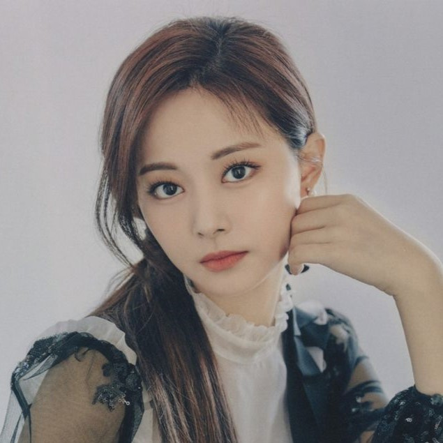

TZUYU

Stage Name:
Tzuyu (쯔위)
Birth Name:
Chou Tzuyu (周åç‘œ)
Nationality:
Taiwanese
Position:
Lead Dancer, Sub Vocalist, Visual, Makanae
Birthday:
June 14, 1999
Representative Emoji:
🦌
Instagram:
thinkaboutzu
Facts about Tzuyu
She was born in Tainan, Taiwan.
She comes from a wealthy family, Tzuyu’s parents own a chain of dermatology clinics in southern Taiwan, her mom also owns 2 coffee shops.
She was discovered by JYP at the MUSE Performing Arts Workshop in Tainan in 2012 and went to South Korea on November 15 to start her training.
Her representative color is Blue.
Tzuyu ranked 1st in “Most Beautiful Faces of 2019”